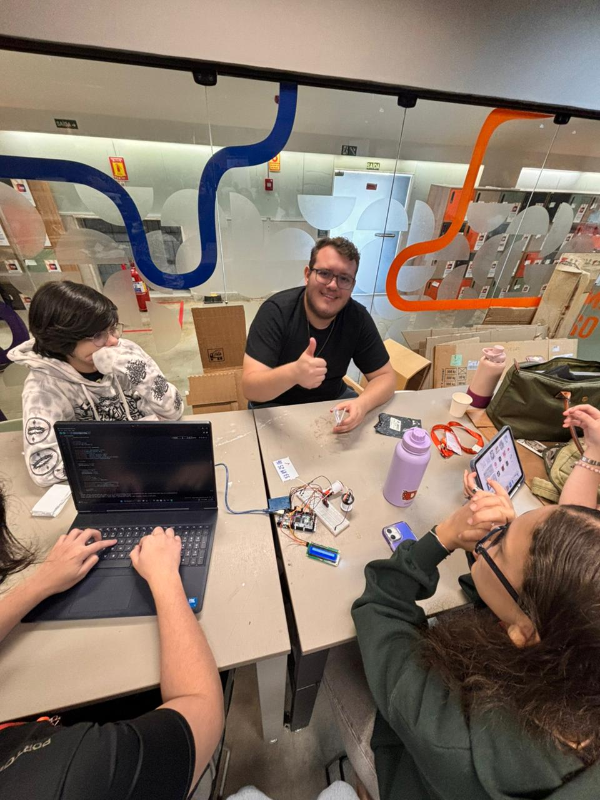

Meus Projetos

Projeto 1 - Um jogo de tabuleiro que ensina conceitos de governança e matriz de risco. Ambientado em uma empresa, cada jogador precisa tomar decisões estratégicas que podem impactar a reputação da organização. O objetivo é aprender de forma prática como gerenciar riscos e fortalecer a governança corporativa.